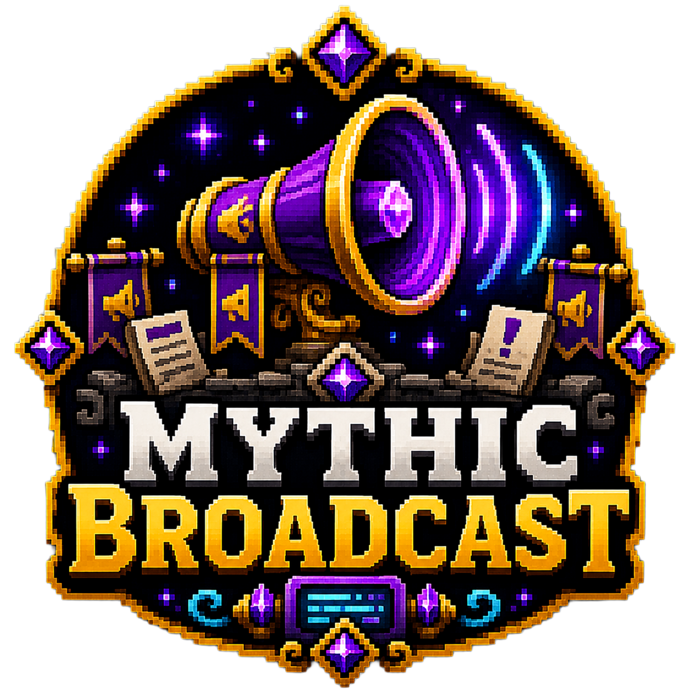

me.Ghoul.MythicBroadcast.Main
Server Exclusive
MythicBroadcast
Timed server announcements with configurable interval, prefix and rotation mode.
—Spigot downloads
—Modrinth downloads
Private buildRelease status
PrivateCurrent version
Paper/Spigot 1.20+Compatibility
Full overview
Timed server broadcasts with simple rotation and configurable formatting.
MythicBroadcast keeps important reminders, server notices and community prompts visible without relying on external plugins or complicated schedules.
It is intentionally lightweight: configure a list of messages, choose whether they should cycle in order or appear randomly, and let the plugin handle regular delivery.
Best suited toPrivate or community servers that want automated reminders without the weight of a full chat suite.
How it works
Configure messages once and let the server speak for itself
Administrators add messages to the configuration, choose a minute-based interval and select either LOOP or RANDOM mode. Broadcasts then appear automatically to all online players using the optional prefix formatting.
When changes are made, the /mb reload command lets staff refresh the configuration without rebuilding the entire server setup.
- Very quick to configure
- Useful for votes, Discord reminders and server rules
- No heavy dependencies
- Predictable timed announcements
Key features
What this plugin focuses on
- Loop or random broadcast mode — Run broadcasts in a strict sequence or let them shuffle for a less repetitive feel.
- Configurable interval timer — Set how often messages appear with a simple minute-based value.
- Optional prefix formatting — Display messages with or without a branded server prefix.
- Simple message list configuration — All broadcast lines live in one readable configuration section.
- Lightweight admin reload command — Refresh configuration changes with /mb reload.
- Low-overhead utility design — Small scope and simple behaviour keep the plugin easy to maintain.
This project is currently a private server utility. It focuses on reliability and minimal overhead rather than bloated scheduling features.
Setup guide
Recommended starting checklist
- Install the plugin and let it generate config.yml.
- Add your message list under Messages.
- Choose the interval, mode and prefix options.
- Use /mb reload after edits.
Source-grounded documentation
Technical reference from the supplied project
This reference is written into the page as static HTML from the uploaded source project. It does not rely on automatic browser-generated documentation.
✓
Source verifiedMythicBroadcast · 1 Java classes
Commands
Command reference
Declared directly in plugin.yml.
| Command | Purpose | Usage | Aliases | Permission |
|---|---|---|---|---|
/mb | Reload the MythicBroadcast config | /mb reload | — | mythicbroadcast.admin |
Permissions
Permission reference
Defaults and descriptions are taken from the supplied plugin descriptor.
| Permission | Description | Default |
|---|---|---|
mythicbroadcast.admin | No description declared in plugin.yml. | op |
Configuration
Bundled configuration files
Expand a file to inspect detected configuration paths. Repeated list entries are intentionally condensed.
config.yml7 detected key paths
SettingsSettings.EnabledSettings.Interval-MinutesSettings.ModeSettings.Prefix-EnabledSettings.PrefixMessages
Tokens & placeholders
Detected substitution tokens
Literal tokens found in source files and bundled configuration.
No literal message/config tokens were detected.
Architecture
Source organisation
A concise map of the supplied implementation, useful for administrators and developers evaluating the project.
Packages
me.Ghoul.MythicBroadcast1 classes
Key implementation classes
Main
API and integration classes
No dedicated API, hook, provider or expansion classes were detected by name.